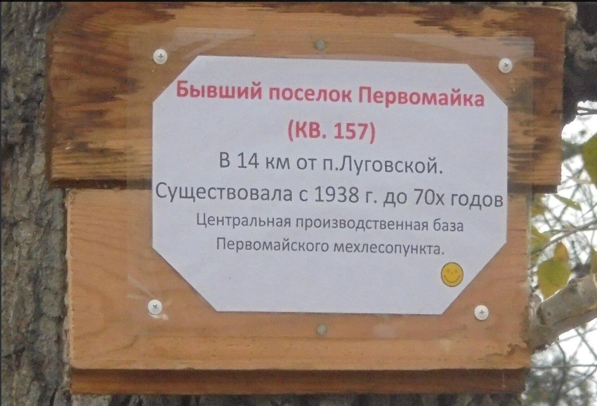

Поселок Первомайский
Посёлок Первомайский располагался на железной дороге на расстоянии 14 километров от станции Пышма. В 1955 г. в нём проживало 363 семьи: 1216 человек, в том числе 459 детей. Посёлок большой, состоял из нескольких улиц, названия улиц в похозяйственной книге не зафиксированы. 291 семья проживала в квартирах - это примерно 70 домов, 72 семьи проживали в домах индивидуальной постройки. Даты постройки первых домов 1939-1940 годы.
В посёлке располагалась производственная база Первомайского МЛП: это нижний склад, шпалорезный цех, площадка для погрузки вагонов, гараж. Так же объекты социальной сферы: школа, в которой преподавало пять учителей, детские ясли, объекты торговли, медпункт, в котором фельдшером работал Грошев Евгений Степанович. Крюков Владимир Николаевич работал в отделе культуры Тугулымского РП предположительно киномехаником, из чего можно сделать вывод, что в посёлке был клуб. Все остальные жители посёлка работали в Первомайском МЛП. Каждая семья имела подсобное хозяйство: земельные участки, в подворьях содержались 251 корова и 138 овец.

Фотография Нины Силивановой
Посёлок был достаточно большим, вокруг него располагались богатые природные ресурсы: грибы, ягоды - особенно брусника и клюква росли в изобилии.
В дальнейшем, когда вырубили близлежащие к поселку Первомайскому леса, Тугулымский ЛПХ сократил свою структурную единицу – Первомайский МЛП. Люди переехали в п. Луговской и устроились на работу в Александровский МЛП, некоторые переехали в п. Юшала на работу в Юшалинский МЛП и Квартал 190 на работу в Бахметский МЛП. В 1972 году посёлок Первомайский перестал существовать.
Злобин С.Н. Краеведческое исследование "История забытых деревень", 2016 г.